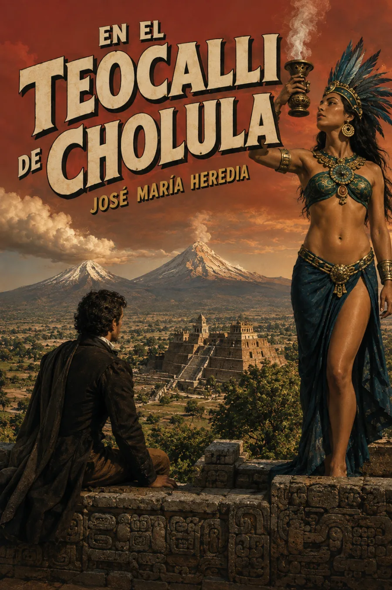

El paisaje se vuelve pregunta
Sentado sobre la pirámide de Cholula, el yo poético contempla el valle al caer la tarde. La luz dorada da paso a la luna y a la sombra del volcán: la amplitud del paisaje conduce a una meditación sobre el tiempo, la ruina y la fragilidad del poder.
Ni la grandeza de los pueblos ni la del volcán queda fuera de la pregunta por lo perecedero.
Después llega el sueño del pasado. La evocación de los antiguos gobernantes desemboca en una condena de la tiranía y de la violencia ritual. Esa visión pertenece a la perspectiva moral del poema: no debe confundirse con una descripción arqueológica neutral de las sociedades mesoamericanas.
El texto lleva la fecha «Diciembre de 1820»; la edición de Poesías de 1832 recoge la obra bajo este título. Referencias: texto del poema y edición histórica presentada por la UNAM. La imagen de cabecera interpreta su paisaje; no reconstruye un recinto ceremonial ni una vista histórica exacta.
La lectura
En el teocalli de Cholula · Poema completo
Claves de escucha: crepúsculo, noche, tiempo y visión del pasado. Son orientaciones de lectura, no capítulos originales.
Reseñas

Excelente